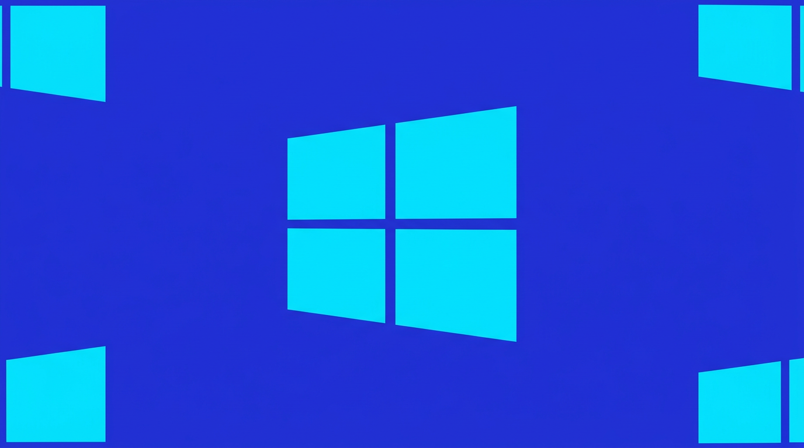

2026 年 7 月 2 日，微软宣布了一项在规模和思路上都堪称史无前例的举措——成立全新业务部门 「Microsoft Frontier Company」，投入 25 亿美元预算，组建一支 6000 人的工程师与行业专家团队，直接嵌入企业客户的工作现场，协助其设计、部署并持续优化 AI 系统。
这不是传统的咨询项目或软件实施服务。微软商业业务 CEO Judson Althoff 将其定义为「业内规模最大的结果导向型工程组织」——工程师不是交付产品就走，而是长期驻场，与客户共同迭代，以可衡量的业务成果作为唯一考核标准。
这一举动背后的信号极其明确：AI 的商业化瓶颈已经从「谁有更好的模型」转向了「谁能让模型真正运转起来」。
理解 Frontier Company 的诞生，需要先看清 2026 年 AI 行业的三个现实：
经过两年的疯狂投入，企业客户开始要求实实在在的 ROI。根据多地市场反馈，AI 生产力和营收增长「仍然难以量化」，CFO 们对动辄数千万美元的 AI 预算案越来越审慎。微软自己的财报也反映出这个压力——尽管 AI 收入持续增长，但整体业绩增速放缓，市场希望看到的是 AI 投入转化成真金白银。
将 Copilot 和 Azure AI 服务打包卖给企业，然后期待客户自己搞定集成，这个模式被证明是远远不够的。企业面临的是数据管道不通、安全合规不完备、业务流程未梳理、员工不会用等一系列系统工程问题——这些都不是一个 API Key 能解决的。
有趣的是，OpenAI 和 Anthropic 在几乎同一时期也推出了各自的部署实体。OpenAI 成立了「Deployment Company（DeployCo）」——一个拥有超过 40 亿美元资本的子公司，派驻约 150 名工程师入驻客户现场。Anthropic 则与 Blackstone、高盛合作，成立了自己的部署公司，瞄准资源和团队缺口更大的中型企业。三家 AI 领头羊不约而同地得出结论：AI 的价值不在于模型本身，而在于它嵌入业务流程、数据管道和合规架构的能力。
微软 Frontier Company 由 Rodrigo Kede Lima 领导，他此前负责微软亚洲业务，拥有跨越美洲和亚洲的丰富经验。新部门的运作方式与传统「Forward Deployed Engineering（FDE）」有本质区别：
6000 人——这不仅仅是工程师，还包括行业顾问、客户支持专家和行业销售专家。对比之下，OpenAI 的 DeployCo 仅约 150 人。微软的团队规模是其 40 倍。当资源密度达到这个数量级，就不仅是「派几个人帮忙」了——它意味着微软可以在客户现场建立完整的 AI 能力建设体系，从数据基础设施到模型调优，从业务流程改造到员工培训。
Althoff 在官方博客中解释，企业需要两样东西才能通过 AI 成功：一是「平台」——让企业自己积累的数据、专业知识和流程能够跨模型持续沉淀——二是独立的「治理层」，用于监控、管控和保护整个技术栈中的 AI 系统，同时通过 FinOps 实践追踪 ROI。Frontier Company 的任务就是帮客户同时建立起这两样东西。
为了全球化扩张，微软正在利用其系统集成商网络：
这意味着 6000 人的数字只是微软直接雇佣的数据——加上合作伙伴网络，实际投入的工程力量可能远超这个数字。
微软已披露数个首批客户：伦敦证券交易所集团（LSEG）——在其 Workspace 平台嵌入 AI 搜索能力；Land O'Lakes、联合利华和 Novo Nordisk。这些横跨金融、农业、消费品和医药等不同行业，显示了 Frontier Company 的跨领域雄心。
消息公布后，微软股价在当日上涨，华尔街对这一战略转型表示欢迎。尽管分析师指出微软股价较年内高点仍有约 15% 的跌幅——这恰恰说明投资人此前对微软「光卖不建」的 AI 策略并不完全满意。
Althoff 在宣传中将「平台中立性」作为一个核心卖点——声称 Frontier Company 会帮企业运行 OpenAI、Anthropic、微软自家模型、开源模型或行业专用模型的任意组合，「不被任何单一供应商锁定」。考虑到微软本身是 OpenAI 的最大投资者（尽管关系正在降温），这其中的讽刺意味不言自明。
就在微软宣布 Frontier Company 的几天前，亚马逊 AWS 也宣布投入 10 亿美元启动自己的 FDE 计划——将工程师派驻客户公司协助 AI 落地。
「直接驻扎在客户现场工作，会形成反馈回路——帮助我们识别模型弱点，并将改进反馈到研究中。」—— Arnaud Fournier，OpenAI DeployCo CTO
Frontier Company 代表了 AI 行业从「轻资产」到「重资产」的范式转变。当模型能力差距缩小到不足 5%（在许多基准测试中已经如此），竞争优势的决定性因素变成了集成能力、行业知识和交付执行力。6000 人的驻场团队是一个极其「重」的投资——只有微软这样的资产负债表才能支撑。这也意味着 AI 领域的进入壁垒正在从技术层面扩展到服务和组织层面。
Althoff 明确承诺：客户的 IP 和数据绝不会被用于训练模型。这回应了企业客户对数据安全和知识产权泄露的核心担忧，也是微软利用其企业信任优势对抗 OpenAI 和 Anthropic 的关键武器——毕竟 OpenAI 和 Anthropic 本身就是模型公司，利益冲突的嫌疑天然存在。
微软选择让 Frontier Company 支持多种模型——包括竞争对手的模型——这从技术上看似自相矛盾（你帮客户部署对手的模型？），但从商业逻辑上非常清晰：面对企业客户，提供「最佳解决方案」远比「推销自家模型」更有说服力。当企业可以在一个平台上自由切换 OpenAI、Anthropic、Meta 的 Llama 和微软的 MAI 模型，Frontier Company 就成了那个不可或缺的中间层——比模型本身更难被替代。
最具讽刺意味的是：推动 AI 普及的最重要角色，仍然是大量的人类工程师。这 6000 名工程师既是 AI 的部署者，也是 AI 进入企业组织的「文化翻译」。他们需要帮助客户员工克服对 AI 的恐惧、建立信任、培养使用习惯——这些是无法代码化和自动化的软性工作。从这个角度看，Frontier Company 是一个关于「人」的项目，而不只是关于「技术」的项目。
Microsoft Frontier Company 的成立标志着 AI 商业化进入了一个新的阶段——从模型军备竞赛转向落地能力竞赛。25 亿美元和 6000 名工程师的投入，是微软对于「AI 的瓶颈不在模型而在工程」这一判断的终极押注。当 OpenAI、Anthropic 和微软三家以不同的规模和策略竞相将工程师送进企业客户的大门，一个事实变得清晰：决定 AI 未来的战场，正在从实验室和云数据中心，转移到企业客户的业务一线。
主要来源：
The Decoder — Microsoft launches $2.5 billion "Frontier Company"
Yahoo Finance — Microsoft to invest $2.5B in new AI implementation business
Mobile World Live — Microsoft unveils $2.5B frontier AI unit